In this course, we will use AndroidStudio for developing mobile graphical user interfaces. You can download it from: https://developer.android.com/studio
Once you download it, run the installer process. Just choose the default options for installing it.
Android Studio is a program like Eclipse or NetBeans. You can edit code, launch the debugger and inspect how your program is running. You can set breakpoints and see what your variables are set to. You will also be able to choose how to run your program, either on an Android device, in a web browser, or on your computer.
Once you have installed Android Studio, you must then install the Flutter SDK after:
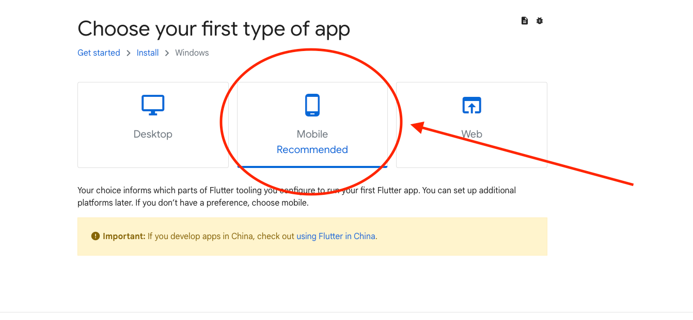
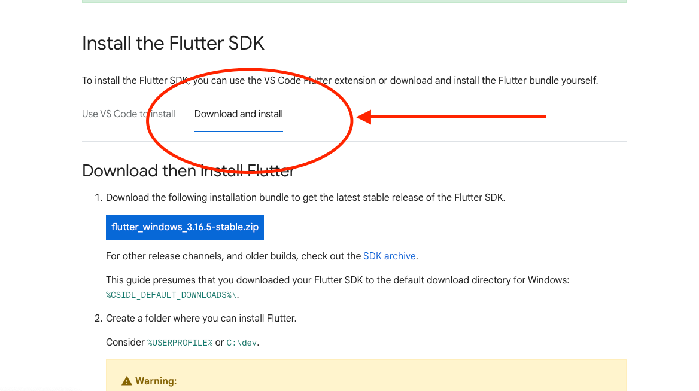
Extract the contents and then move the "flutter" folder somewhere on your computer where the path doesn't have any spaces in the name (So not "Program Files").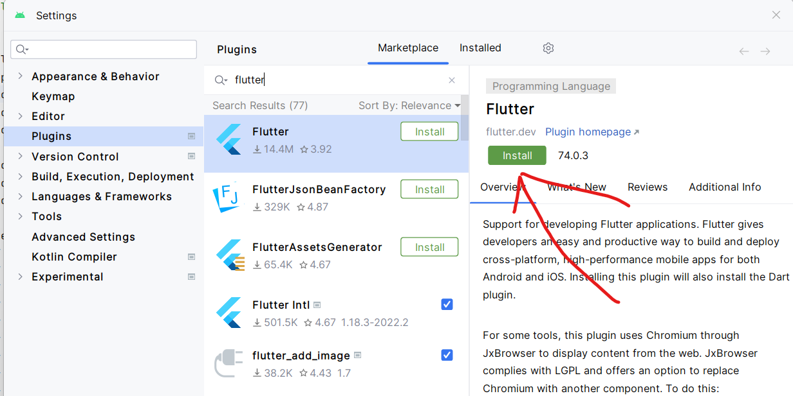
You will have to restart the IDE after so go ahead and do so.
Flutter is a new generation of multiplatform frameworks that lets you write code in one language, but then compile it for many other platforms. Flutter is similar to Electron and React Native, which uses JavaScript or Typescript to create the app, and then you can compile it for mobile, desktop or web.
Flutter uses a language called Dart to write an application, and then the Dart code gets compiled to native code. Microsoft launched a similar platform called MAUI (Multi-platform App UI) which uses C# and .NET to compile to machine code for different platforms. https://dotnet.microsoft.com/en-us/apps/maui
For now, your choice of platforms for running a Flutter app are:
Flutter also uses a new feature called Hot-Swapping of code, meaning that you don't need to restart your application to recompile your program.
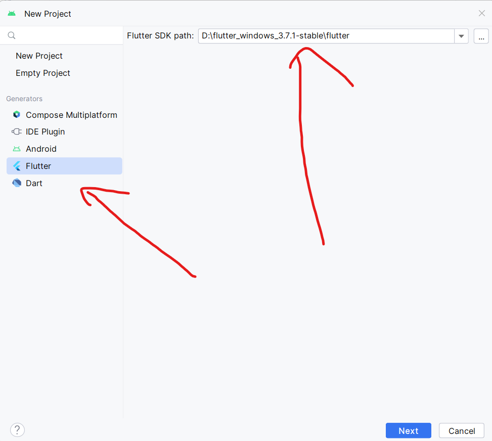
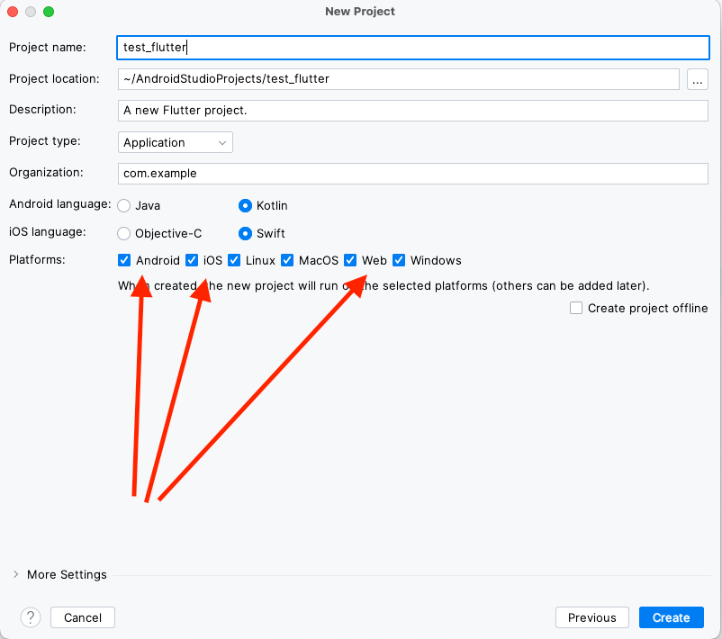
This will take some time to create the project Once it has finished, you should see this at the top of your screen:
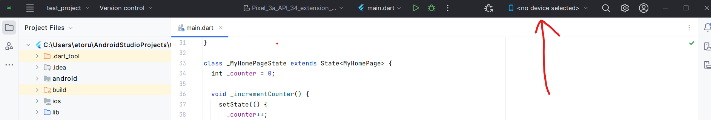
If you open the menu, you can see what platforms you can run your app on.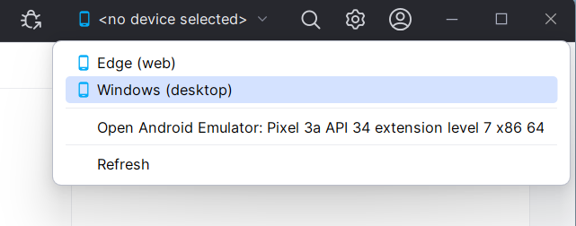
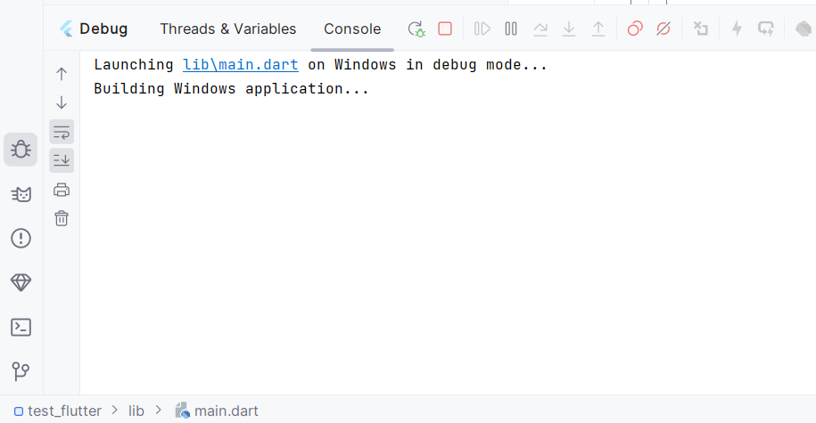
You should eventually see a Windows program running.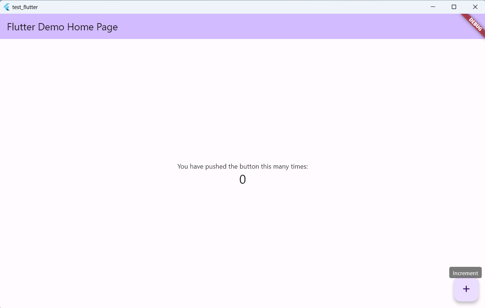
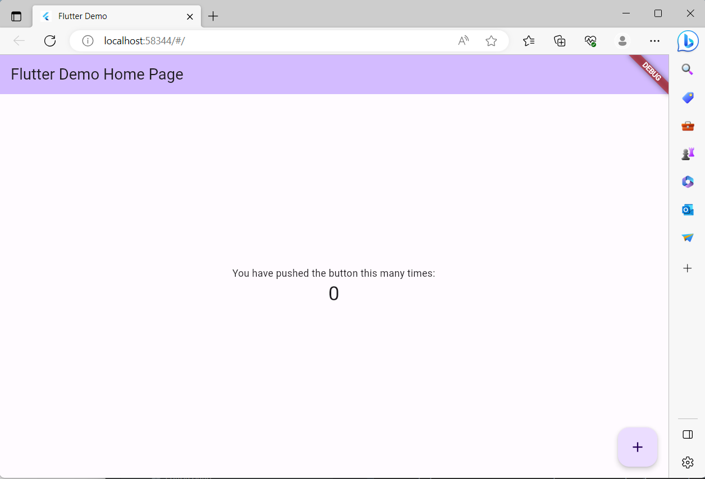
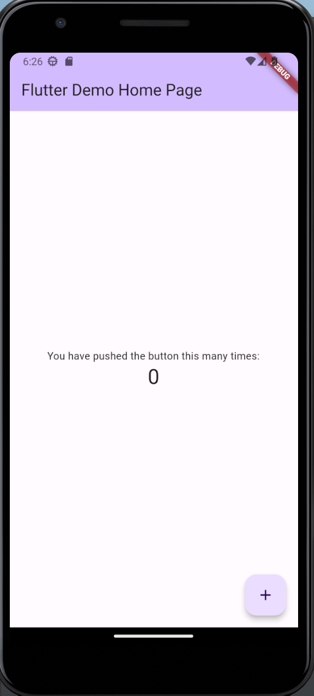
You might have to show your running devices by pushing this button: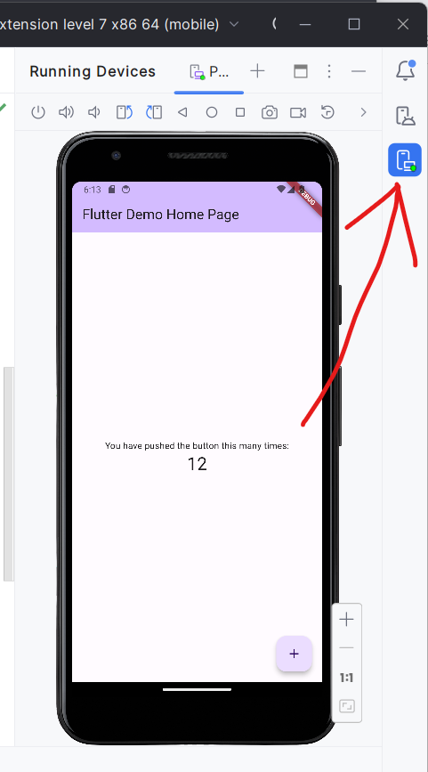
The important thing to understand about Flutter is that you just write the code once and you can run it on many different platforms. If you would like more information about Flutter, go here: https://www.adservio.fr/post/what-is-flutter-and-what-are-its-advantages